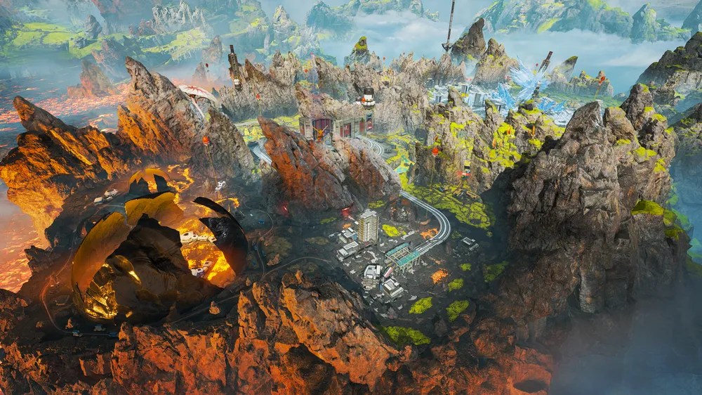

킹스 캐년(King's Canyon)
좁은 맵으로 인한 매우 잦은 양각, 그리고 매우 심한 고저차와 과하게 많은 개활지라는 특성상 구조물을 선점하는 쪽이 무조건적으로 유리해 극단적인 존버 조합이 큰 우세를 가지는 탓에 랭크 게임에서는 매우 기피되는 맵이다.
세상의 끝(World's Edge)
평야와 고층 건물이 많아서 장거리 견제가 꽤 많이 일어난다. 또한 고층건물이 많고 건물이 밀집되어 있는곳에서는 킹스 캐년에서 자주보기 힘든 수직적인 시가전을 볼수있다.
올림푸스(Olympus)
이 전체적으로 트여있어 개활지 싸움이 자주 일어나며, 맵 자체도 크지 않은 편인데 맵을 가로지르는 페이즈 러너와 상당한 길이의 집라인에다 차량인 트라이던트까지 존재하여 교전이 벌어지기 시작하면 주변 모든 분대가 몰려와서 밑도 끝도 없이 꼬리를 무는 난전이 벌어지기 쉽다.